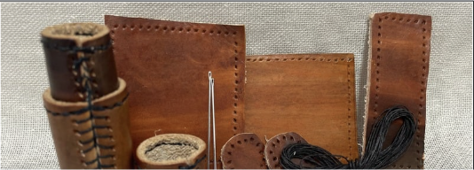

Charlotte Franks-Pearson
My name is Charlotte Franks-Pearson and I am currently in my third year of completing a Bachelor of Design (Technologies and Applied Sciences) and a Bachelor of Education (Secondary) at Australian Catholic University. I am majoring in Food Technology and minoring in Textiles.
Metal Work
As part of my univercity course I have been required to make a copper ladle which introduced me to making metal items by hand and using very little equiptment
Woodwork
I had experience in highschool in wood technology and in univercity I revisted my knowledge and made a phone safe which reminded me of using basic woodwork equiptment, but introduced me to using the laser cutter.
Engineering & Digital Technologies
Through differnt units across my years of study I have been re-exposed to aspects of engineering and Digital technologies. In univercity I made a rubber band car that used rubber bands as gears to spin. In another unit I combined the engineering compoent to digital techno9logies to make an automatic cat feeder where a lid would open when the cat came near the food and allow it to eat.
Design and Technology
Throughout my degree I have been able to explore a range of designand technology components which I was able to draw on my own personal experience of my own Design and Technology Major Project.
Professional Journey
1. Completing my course at the end of 2026 and eligible for working in a school at the end of 2025.
2. Completed three professional placements; more information can be found on Teaching Practice and Past Experience.

Past Work and Samples
Click here for examples of past textiles works and projects I am currently completing at university.